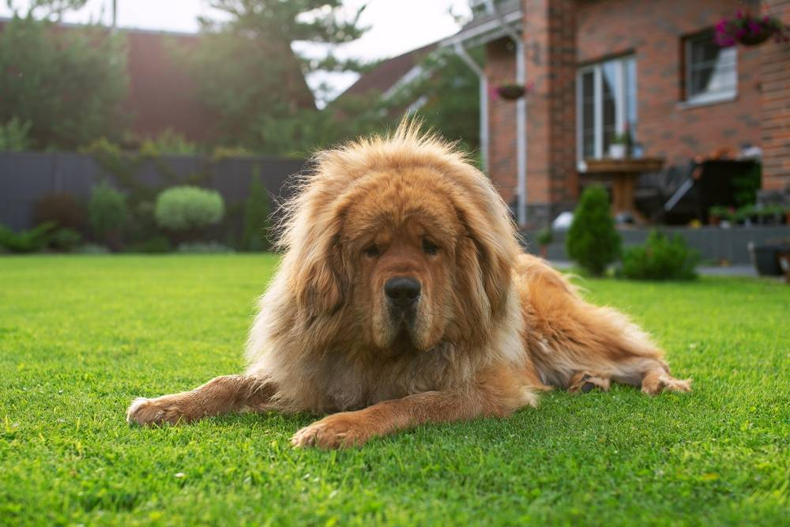

Породы собак
Вес тибетского мастифа – сколько может весить питомец по стандарту
16 марта 2026
6 минут на чтение
483 просмотра

Эта порода, по оценкам ученых, является древнейшей из одомашненных человеком собак и возможным предком всех современных молоссов – от очень крупных до миниатюрных. В Европе такие питомцы появились в 19 в., но популярность начали обретать лишь в конце прошлого столетия и на сегодняшний день все еще достаточно редки.
То, сколько весит тибетский мастиф, напрямую связано с размером этой породы – одной из самых больших в мире. Максимальная масса тела не ограничена стандартом, но избыточные килограммы чрезвычайно опасны для крупных питомцев, так как нагрузка на организм у них намного выше, чем у средних и маленьких собак.
Сколько весит тибетский мастиф – как меняется рост и вес при взрослении
Эта порода является одной из самых крупных в мире, стандартом обозначена только минимально допустимая высота в холке ее представителей, максимальная не ограничена, как и масса тела.
Щенки, даже из одного помета, нередко отличаются размерами и взрослеют с разной скоростью, на это влияют наследственные особенности и множество внешних условий, поэтому масса и высота питомцев одинакового возраста могут отклоняться от предложенных показателей.
| Возраст питомца |
Вес в норме (кг) |
Рост (см) |
|
Мальчики | Девочки |
Мальчики | Девочки |
| 1 месяц | 4-6 | 3-5,5 | 24-28 | 23-25 |
| 2 месяца | 5-10 | 4,5-9,5 | 32-36 | 30-34 |
| 3 месяца | 8,5-15 | 8-14 | 36-43 | 35-41 |
| 4 месяца | 12-18 | 11-17 | 43-46 | 42-44 |
| 5 месяцев | 17-25 | 16-23 | 45-49 | 43-47 |
| 6 месяцев | 23-30 | 20-29 | 47-51 | 45-49 |
| 7 месяцев | 31-37 | 29-35 | 49-53 | 47-52 |
| 8 месяцев | 37-42 | 34-43 | 51-56 | 48-53 |
| 9 месяцев | 45-51 | 40-49 | 55-58 | 50-55 |
| 10 месяцев | 53-60 | 48-55 | 58-60 | 52-57 |
| 11 месяцев | 60-67 | 50-61 | 61-64 | 54-59 |
| 12 месяцев | 64-70 | 54-65 | От 66 | От 61 |
| 2 года | 70-78 | 58-71 | От 66 | От 61 |
| 3 года | 72-80 | 60-75 | От 66 | От 61 |
Важно: Средний рост и вес тибетского мастифа — не предел для породы, самые крупные ее представители достигают 90–100 и более кг. Однако необходимо следить за тем, чтобы количество жировых отложений у собаки не превышало нормы, для этого рекомендуется проконсультироваться с ветеринаром и определить оптимальные для питомца параметры.
От каких факторов зависят рост и вес породы?
Основные факторы, определяющие эти показатели, – это генетика и наследственные особенности. Чем крупнее родители щенка, тем выше вероятность, что и он сам вырастет очень большим, но в отдельных случаях могут проявиться рецессивные гены, и питомец окажется средним по размеру.
Тибетские мастифы формировались как охранная порода. От них во все времена требовалась значительная физическая мощь, однако на размер влияют также условия содержания, рацион и уровень активности. Питомцы в целом нетребовательны, но нуждаются в достаточном пространстве для движения, сбалансированном питании и ветеринарном контроле.
Сколько лет растут щенки мастифов?
Наиболее крупные породы становятся физически зрелыми поздно – к 2–3 годам. Максимальной высоты в холке они достигают раньше, примерно к 12 месяцам, хотя могут расти и дольше. Но развитие организма в этот период активно продолжается, а вес тибетских мастифов, особенно кобелей, может увеличиваться до 4 лет за счет набора мышечной массы.
Помощь питомцу при отклонениях веса от нормы
Для представителей крупных пород ожирение и истощение особенно опасны. Все основные системы организма таких животных и при нормальной массе испытывают существенную нагрузку, а отклонения (в любую сторону) значительно усугубляют ее, отражаясь на здоровье.
Ожирение может провоцировать развитие осложнений в работе сердечно-сосудистой, эндокринной, дыхательной систем, опорно-двигательного аппарата. Оно снижает иммунитет, а также нарушает функциональность репродуктивных органов у племенных собак.
Основные причины истощения (кахексии):
- Заражение глистами, вызывающее снижение веса у взрослых собак и задержку роста у щенков.
- Патологии эндокринной системы, такие как сахарный диабет, гипотиреоз, болезнь Аддисона.
- Хронические инфекции – бактериальные, грибковые и вирусные.
- Онкология – истощение в этом случае может стать следствием как самого заболевания, так и побочным эффектом лечения.
- Нарушения работы ЖКТ – гастрит или панкреатит.
- Болезни печени и почек, например, гепатит, цирроз, почечная недостаточность.
Как предотвратить отклонение массы тела питомца от нормы?
В связи с высоким риском развития различных патологий, следить за тем, сколько весит тибетский мастиф, очень важно. Основных методов контроля два: визуальная оценка (с учетом густой шерсти) и регулярное взвешивание в ветклинике. Для определения оптимального показателя применяется расчет индекса массы тела: вес в кг разделить на рост в м².
Важнейшее условие сохранения наилучшей физической формы собак – правильное питание, соответствующее возрасту и активности, а также достаточно подвижный образ жизни.
Источники:
- Linder D. E., Parker V. J. Dietary aspects of weight management in cats and dogs, Veterinary Clinics of North America: Small Animal Practice, 2016.
- Стандарт FCI № 230. Тибетский мастиф.